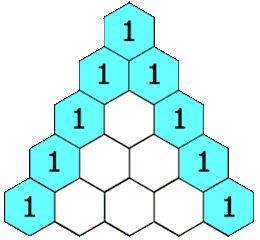

books / company-solutions / Array
119. 杨辉三角 II
| 题目信息 | 内容 |
|---|---|
| 难度 | 简单 |
| 核心模式 | 一维滚动数组，从后往前原地递推 |
| 时间复杂度 | O(rowIndex²) |
| 空间复杂度 | O(rowIndex) |
题目与约束
给定一个非负索引 rowIndex，返回「杨辉三角」的第 rowIndex 行。
在「杨辉三角」中，每个数是它左上方和右上方的数的和。

示例 1:
<strong>输入:</strong> rowIndex = 3
<strong>输出:</strong> [1,3,3,1]
示例 2:
<strong>输入:</strong> rowIndex = 0
<strong>输出:</strong> [1]
示例 3:
<strong>输入:</strong> rowIndex = 1
<strong>输出:</strong> [1,1]
提示:
0 <= rowIndex <= 33
进阶：
你可以优化你的算法到 O(rowIndex) 空间复杂度吗？
核心不变量
用一个长度为
rowIndex+1的数组保存"当前行"，从后往前更新row[j] += row[j-1]时，row[j-1]仍是上一行的旧值，因此不会覆盖尚未使用的数据。
完整推导
思路推导
-
暴力做法与痛点：最容易想到的是维护整个二维三角形，逐行生成再取最后一行。但这样空间是
O(rowIndex²)，当rowIndex较大时浪费严重，也不满足"进阶"的O(rowIndex)要求。 -
观察递推关系：第
i行完全由第i-1行决定——row[i][j] = row[i-1][j-1] + row[i-1][j]。既然只需要最后一行，就可以把二维压成一维：只保留"当前行"这一条数组，每轮在它自身上做递推。 -
从后往前是灵魂：如果从前往后更新，
row[j] = row[j] + row[j-1]时row[j-1]已经被本轮改过，用的是新值，结果就错了。改成从右往左遍历，row[j-1]还没被试过，仍是上一行的值，正好满足公式。
以 rowIndex = 3 为例：
- 初始 [1]
- 第 1 行：末尾补 1 → [1,1]（无需内部更新）
- 第 2 行：补 1 → [1,1,1]，从 j=1：row[1]=1+1=2 → [1,2,1]
- 第 3 行：补 1 → [1,2,1,1]，从 j=2：row[2]=1+2=3；j=1：row[1]=2+1=3 → [1,3,3,1]
- 每行首尾恒为 1：所以每轮只需在末尾
add(1)，再对中间下标[1, i-1]做一次"右→左"的原地累加。
Java 实现（滚动数组 · 原地递推）
import java.util.ArrayList;
import java.util.List;
class Solution {
public List<Integer> getRow(int rowIndex) {
// row 始终保存当前行的值，目标空间 O(rowIndex)
List<Integer> row = new ArrayList<>(rowIndex + 1);
row.add(1); // 第 0 行只有 [1]
// 从第 1 行递推到第 rowIndex 行
for (int i = 1; i <= rowIndex; i++) {
row.add(1); // 每行末尾先补 1，占住位置
// 从后往前更新，避免覆盖上一行还没用到的 row[j-1]
for (int j = i - 1; j >= 1; j--) {
row.set(j, row.get(j) + row.get(j - 1));
}
}
return row;
}
}
复杂度
- 时间：
O(rowIndex²)。第i行要更新约i个位置，总更新次数为1+2+...+rowIndex，即O(rowIndex²)。 - 空间：
O(rowIndex)。只用一个长度为rowIndex+1的一维数组（返回值本身），没有额外的二维表。
易错点与扩展（面试高频考点）
- 更新方向写反：从前往后更新会用到本轮已经改过的
row[j-1]，结果整行被污染。必须从右往左（for (j = i-1; j >= 1; j--)）更新。 - 忘了先补末尾的 1：每行长度增加一位且末位恒为 1，若忘记
add(1)会越界或漏掉末位。 - 边界
rowIndex = 0：此时循环不进入，直接返回[1]，验证初始化正确。 - 组合数公式法：第
rowIndex行第k个数是C(rowIndex, k)，可用C(n,k) = C(n,k-1) * (n-k+1) / k递推，做到O(rowIndex)时间；但中间乘积可能溢出，要用long承接后再整除。 - 整数范围：
rowIndex <= 33时最大元素C(33,16) ≈ 1.17e9，仍在int范围内，无需long；若题目放宽上界则需改用long。
力扣原题
C++ 实现
#include <vector>
using namespace std;
class Solution {
public:
vector<int> getRow(int rowIndex) {
vector<int> row(1, 1); // 第 0 行
for (int i = 1; i <= rowIndex; ++i) {
row.push_back(1); // 末尾补 1
for (int j = i - 1; j >= 1; --j) { // 从后往前更新
row[j] = row[j] + row[j - 1];
}
}
return row;
}
};
Python 实现
class Solution:
def getRow(self, rowIndex: int) -> list[int]:
row = [1] # 第 0 行
for i in range(1, rowIndex + 1):
row.append(1) # 末尾补 1
for j in range(i - 1, 0, -1): # 从后往前更新
row[j] = row[j] + row[j - 1]
return row